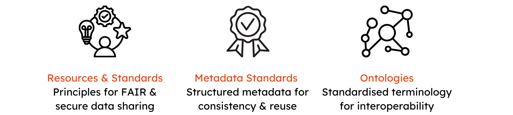

Concepts and Standards¶

- Resources and Standards - Guiding principles and frameworks for data accessibility, reproducibility, and secure sharing across research domains, ensuring consistency, reliability, and ethical data management.
- Metadata Standards - Providing a structured approach to describing and organising research data, ensuring consistency across datasets and facilitating reuse.
- Ontologies - Standardised terminology across datasets to improve metadata quality and enhance data interoperability and integration.
GHGAs metadata model follows several internationally renowned concepts, standards, and resources to provide a metadata schema to share data in a standardized and harmonized fashion.
Resources and Standards¶
FAIR Data Principles¶
While digitization is becoming more and more important and technologies accelerate constantly, NGS experiments and measurements produce large quantities of data. Every single dataset in this huge amount of data should be findable and usable for humans and computers equally. In 2016, a conglomerate of representatives of different disciplines - such as academia, industry, funding agencies and scholarly publishers - published the "FAIR Guiding principles for scientific data management and stewardship". These principles provide guidance on what to consider when data is published so that an automated and individual exploration, sharing, and reusing of the data is possible. FAIR data should be: Findable, Accessible, Interoperable and Reusable.
FAIRsharing¶
Thousands of standards, ontologies and vocabularies have been developed for a variety of communities in order to guide reproducible research. A central database for FAIR standards, repositories and standards is FAIRsharing. The mission of the FAIRsharing community is to evaluate standards, databases, policies, and collections. These can be queried by the user’s specific field of interest and can be categorized by Maintained / Not Maintained, Recommended / Not Recommended and Ready / Deprecated / Uncertain / In Dev.
Global Alliance for Genomics & Health (GA4GH)¶
The Global Alliance for Genomics and Health (GA4GH) is a worldwide acknowledged standards body established to promote globally responsible data sharing of genomic and health-related data. The main objective of this initiative is the alliance of researchers, data scientists, healthcare providers and practitioners and other authorized users while protecting competing interests. GA4GH enables federated data sharing models while preserving the data security, ethical and regulatory framework as well as data authorization and access of sensitive data. Data sharing standards offer data providers the confidence and trust on the data being accessed in accordance with their data policies and without losing control over the multiple downloads of data.
Genomic Data Commons¶
The Genomic Data Commons (GDC) was established by the National Cancer Institute (NCI) to boost the understanding of "large-scale, multidimensional data". Therefore the GDC generates datasets to systematize human tumor variations, especially encouraging the unification and sharing of data. GDC provides the cancer research community with a unified repository and cancer knowledge base that enables data sharing across cancer genomic studies in support of precision medicine. The GDC Data Dictionary is a resource that describes the GDC data model which includes clinical, biospecimen, administrative, and genomic metadata that can be used in parallel with the genomic data generated by the GDC. The properties and the values in the GDC data dictionary contain references to external standards which are defined and maintained by NCI Thesaurus (NCIt) and the Cancer Data Standards Registry and Repository (caDSR).
Metadata standards¶
Metadata provides context and provenance to raw data and methods and are essential to both discovery and validation. It can be classified as a high level document which establishes a common way of structuring and understanding data by including principles and implementation issues utilizing the standard. Metadata standards offer conventions for the generation and description of research data. They specify and define the structure of metadata.
Minimum Information about a high-throughput Nucleotide Sequencing Experiment (MINSEQE)¶
MINSEQE describes the minimum information about a high-throughput nucleotide sequencing experiment that is needed to enable the unambiguous interpretation and facilitate reproduction of the results of the experiment. By analogy to the MIAME guidelines for microarray experiments, adherence to the MINSEQE guidelines will improve integration of multiple experiments across different modalities, thereby maximizing the value of high-throughput research. The five main elements of experimental description to be MINSEQUE compliant include - description of the experiment and sample under study, sequence read data for each assay, final processed data for the study, information about experiment-sample relationship, experiment and sample processing protocol.
Ontologies¶
To ensure that the metadata that is collected in GHGA is of high quality, we support a selection of ontologies for certain properties where their values can be one or more concept terms from these ontologies. The ontologies were chosen based on their suitability to represent the knowledge specific to genomic medicine. They have a wide adoption and community support, which increases their interoperability and reusability.
BRENDA Tissue Ontology¶
The BRENDA Tissue Ontology (BTO) provides a structured controlled vocabulary to describe the source of an enzyme. The ontology contains terms to represent tissues, cell lines, cell types and cell cultures. These terms span uni- and multicellular organisms. We recommend the use of concepts from BTO to represent anatomical location/site associated with a Biospecimen and/or a Sample. For example, instead of using free text ‘heart tissue’ to represent the site from which a Biospecimen was derived from, we would recommend using the appropriate concept BTO:0004293 heart endothelium.
Data Use Ontology¶
Endorsed by GA4GH, the Data Use Ontology (DUO) allows users to tag datasets with usage restrictions, allowing them to become automatically discoverable based on a health, clinical, or biomedical researcher’s authorization level or intended use. We recommend the use of concepts from DUO to represent the use restrictions associated with a Dataset. For example, instead of having use restrictions as free text in a Data Access Policy, we would recommend using the appropriate concepts from DUO to better represent the granularity of use conditions and restrictions.
Human Ancestry Ontology¶
The Human Ancestry Ontology (HANCESTRO) provides a systematic description of the ancestry concepts. HANCESTRO was originally built for NHGRI-GWAS Catalog and has since then been used by other consortia like the GA4GH, and the Human Cell Atlas. We recommend the use of concepts from HANCESTRO to represent the ancestry of an Individual. For example, instead of using ‘European ancestry’ to represent the ancestry of an Individual, we would recommend using the appropriate concept HANCESTRO:0005 European.
Human Phenotype Ontology¶
The Human Phenotype Ontology (HPO) provides a standardized vocabulary of phenotypic abnormalities encountered in human disease. HPO is used by various consortia like the GA4GH, Solve-RD, and IRDiRC. We recommend the use of concepts from HPO to represent phenotypic abnormalities that characterize a Biospecimen and/or an Individual. For example, instead of using free text ‘Heart attack’ to represent an Individual who has suffered from a heart attack, we would recommend using the appropriate concept HP:0001658 Myocardial infarction.
International Classification of Diseases¶
The International Classification of Diseases (ICD) is widely used across the world and is a crucial source of information on the prevalence, causes, and outcomes of human disease and mortality. Through the use of standardized coding, clinical information can be collected and recorded using ICD in primary, secondary, and tertiary care settings, as well as on death certificates. These data form the foundation for disease surveillance and statistical analysis, which inform healthcare planning, payment systems, quality control, and research. In addition, ICD's diagnostic categories facilitate consistent data collection and enable large-scale research studies. We recommend the use of classifications from ICD to represent a diagnosis associated with an Individual. For example, instead of using free text ‘Malignant neoplasm of thymus’ to represent that an Individual suffers from thymic carcinoma, we would recommend using the appropriate concept C37 Malignant neoplasm of thymus.
Mondo Disease Ontology¶
The Mondo Disease Ontology (Mondo) provides a unified disease terminology that yields precise equivalences between disease concepts across various terminologies like OMIM, Orphanet, EFO, and DOID. Mondo is used by several consortia like GA4GH, ClinGen, and Gabriella Miller Kids First. We recommend the use of concepts from Mondo to represent diseases associated with a Biospecimen and/or an Individual. For example, instead of using free text ‘Myocardial infarction’ to represent an Individual who has suffered from a heart attack, we would recommend using the appropriate concept MONDO:0005068 Myocardial infarction.
National Cancer Institute Thesaurus¶
The National Cancer Institute Thesaurus (NCIt) is a reference terminology covering the cancer domain, including diseases, abnormalities, anatomy, drugs, genes, and more. It provides granular and consistent terminology in certain areas like cancer diseases and combination chemotherapies. The terminology is a combination from numerous cancer research domains and enables integration of information through semantic relationships. We recommend the use of concepts from NCIt to represent the case or control status associated with a Sample. For example, instead of using free text ‘True Case Status’ to represent the case status of a sample, we would recommend using the appropriate concept NCIT:C99269 True Case Status.